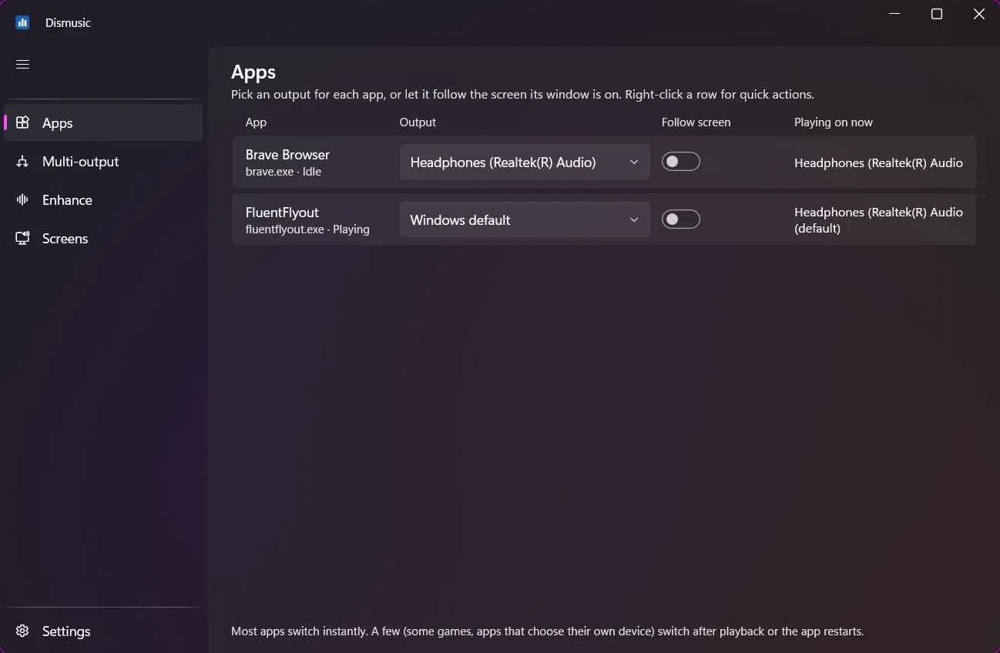
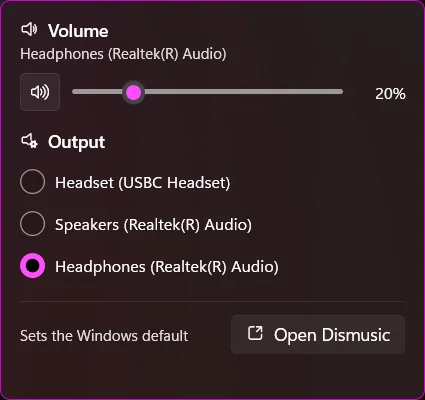

Windows 10 & 11 · Free · No driver
Route every sound.
Shape every app.
Dismusic lives in your notification area and decides where each app's audio goes: headphones for the browser, speakers for the game, both at once, or the TV when you drag a video there. It can also boost any app past 100% and run it through a 10-band equalizer.

- 400%maximum per-app boost, with a limiter
- 10× ±12 dBequalizer bands, 31 Hz to 16 kHz
- −48 dBwhere the original sits while enhanced
- 0drivers to install, admin prompts to click
Routing
One mixer for everything you hear
Scroll through what Dismusic can do with your sound. The diagram follows along.
-
Per-app output
Send the browser to your headphones and the game to your speakers. Dismusic uses the same switch as Windows' own volume mixer, so the choice sticks even when Dismusic isn't running.

-
Several devices at once
Play your music on speakers, headphones and the TV together. Copies stay in sync automatically, each device gets its own delay and volume, and a device that already plays the original is skipped so nothing echoes.

-
Sound follows the screen
Tell Dismusic which speakers belong to each monitor. Drag a video window onto the TV and its sound moves to the TV's HDMI audio; drag it back and the sound comes back too.
-
Enhance any single app
Give one app a bass boost or a clearer voice without touching the rest of your system. Everything else on the device plays exactly as before.
Enhance
Ten bands, ±12 dB, per app
These are the real curves of the built-in presets. Save your own, and the last one you used is applied again after Windows starts.
-
Bass boost
Fuller low end for music and films on small speakers or thin headphones.
-
Voice / podcast
Rumble cut, presence lifted. Calls and podcasts get easier to follow.
-
Gaming
Brings out footsteps and positional cues in the 2–8 kHz range.
-
Loud
Twice the level for quiet apps, with the limiter keeping peaks under −1 dBFS so it doesn't distort.
How it works without a driver
Tools like this usually install a virtual sound card. Dismusic turns the enhanced app down to 1/256 in Windows, so the original keeps playing at −48 dB where you can't hear it. It captures that app with Windows' own loopback interface, multiplies it back by exactly 256, applies your settings and plays the result on the same device about 50–60 ms later. Turn it off or quit, and the app's volume is put back. If Dismusic ever closes unexpectedly, it restores the volume on its next start.
Quick controls
Volume and output, one click from the taskbar
Click the Dismusic icon in the notification area for the current device's volume and mute, and switch the Windows default output without opening Sound settings. Right-click for the full menu.
- Ctrl+1…5switch pages
- F5refresh devices
- Ctrl+Wclose to the tray

Install
One file. No installer.
Download it
Save
Dismusic-0.2.0-win-x64.exesomewhere permanent, like aDismusicfolder in your user folder. Start with Windows points at wherever the file is.Allow it past SmartScreen
The app isn't code-signed yet, so Windows shows “Windows protected your PC”. Choose More info, then Run anyway. Check the fingerprint below first if you want to be sure the file is genuine.
Find it in the notification area
It opens its window and adds a tray icon (it may be under “Show hidden icons”). Closing the window keeps it running; quit with Exit from the icon's right-click menu.
It starts with Windows
The first run turns on Start with Windows, because routing and enhancement only work while Dismusic runs. You can turn that off in Settings.
File fingerprint (SHA-256)
Run Get-FileHash .\Dismusic-0.2.0-win-x64.exe in PowerShell and compare it with:
21a12707b22a814a65da9b6edc2d46dd5d53ddef0e83977bbed786fc8f7db8b7
Requirements
- Windows
- 10 version 2004 (build 19041) or later, or 11. 64-bit.
- Account
- A normal user. No administrator rights.
- Other software
- None. .NET is included in the file.
Uninstall
Turn off Start with Windows in Settings, choose Exit from the tray icon, and delete the file. For settings and logs too, delete %APPDATA%\Dismusic and %LOCALAPPDATA%\Dismusic.
Good to know
Known limitations
- Per app, not per window. Windows routes sound per program, so two browser windows on two screens can't go to different devices. The window on top decides.
- Some apps choose their own device. Certain games and apps with their own output setting ignore per-app routing, or switch only after playback restarts.
- Copies and enhanced audio arrive a little late. Multi-output copies run 60–80 ms behind (adjustable per device) and enhanced audio about 50–60 ms, which can show as lip-sync in videos.
- Other enhancers. Tools like FxSound re-play audio on another device that Dismusic can't see. Don't copy to the device such a tool already outputs to.
- Per-app routing uses an undocumented Windows interface. It's the one Windows Settings uses. If an update changes it, Dismusic shows a warning and its other features keep working.
- Protected content, such as some DRM video, can be silent in copies because Windows blocks capturing it.
FAQ
Questions
Is it free?
Yes. There's nothing to buy and no account.
Why does the volume mixer show an enhanced app at 0%?
That's how enhancement works without a driver: the original is turned down to an inaudible level and Dismusic plays the processed version instead. Use Dismusic's volume slider for that app. Turning enhancement off puts the app's volume back.
I hear an echo with Multi-output.
A device is getting both the original and a copy. Dismusic skips devices where the source already plays, but it can't see what other enhancers or the "All apps" source send where. Turn off the device that already plays the sound, or choose "Everything on" a device as the source.
Does it work with Bluetooth headphones?
Yes. Bluetooth adds its own delay, often 100–250 ms, so when you pair it with wired speakers, add delay to the wired device until they line up.
Does it need to keep running?
Per-app output choices are stored by Windows and keep working without it. Multi-output, screen follow and enhancement need Dismusic running, which is why it starts with Windows.